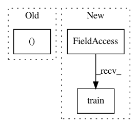

2775c15702fd52f081ff8fded51f4f38877659df,examples/_tests_scripts/z_classification.py,,,#,87
Before Change
// In[ ]:
from catalyst.dl.callbacks import InferCallback
loaders = collections.OrderedDict([("infer", loaders["train"])])
runner.infer(
model=model, loaders=loaders, callbacks=[InferCallback()], check=True
)
After Change
runner = SupervisedRunner()
// model training
runner.train(
model=model,
criterion=criterion,
optimizer=optimizer,
scheduler=scheduler,
loaders={"train": loaders["train"]},
valid_loader="train",
callbacks=[
AccuracyCallback(accuracy_args=[1, 3, 5]),
],
logdir=logdir,
num_epochs=num_epochs,
check=True
)
// In[ ]:
// utils.plot_metrics(logdir=logdir, step="epoch", metrics=["loss", "accuracy01"])
In pattern: SUPERPATTERN
Frequency: 3
Non-data size: 3
Instances
Project Name: catalyst-team/catalyst
Commit Name: 2775c15702fd52f081ff8fded51f4f38877659df
Time: 2019-08-01
Author: scitator@gmail.com
File Name: examples/_tests_scripts/z_classification.py
Class Name:
Method Name:
Project Name: lene/nn-wtf
Commit Name: 430cda28f3b04639f34990014d5a267b26b57696
Time: 2016-02-26
Author: lene.preuss@gmail.com
File Name: nn_wtf/mnist_graph.py
Class Name: MNISTGraph
Method Name: train
Project Name: lene/nn-wtf
Commit Name: e0d6a5289e0efcdd5365e49d7303ffb0e366f6ea
Time: 2016-02-26
Author: lene.preuss@gmail.com
File Name: nn_wtf/neural_network_graph.py
Class Name: NeuralNetworkGraph
Method Name: train